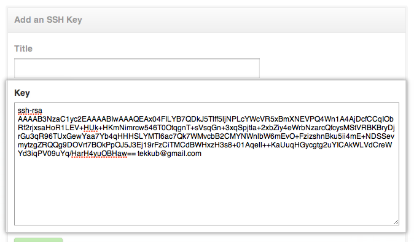

Forget the terminal. Download our native app instead.
Download GitHub for MacSkip this guide. Download our native app instead.
Download GitHub for WindowsSSH keys are a way to identify trusted computers, without involving passwords. The steps below will walk you through generating an SSH key and then adding the public key to your GitHub account.
Tip: We recommend that you regularly review your SSH keys list and revoke any that haven't been used in a while.
Step 1: Check for SSH keys
First, we need to check for existing SSH keys on your computer. Open up your Terminalyour Terminalyour Git Bashthe command line and type:
ls -al ~/.ssh # Lists the files in your .ssh directory, if they exist
Check the directory listing to see if you already have a public SSH key. The default public key file names are:
- id_dsa.pub
- id_ecdsa.pub
- id_ed25519.pub
- id_rsa.pub
Tip: If you have a new installation of Mac OSX, you will not have a ~/.ssh directory. It will be created when you run the ssh-keygen command in step 2 below.
Step 2: Generate a new SSH key
To generate a new SSH key, copy and paste the text below, making sure to substitute in your email address. The default settings are preferred, so when you're prompted to "Enter a file in which to save the key", just press Enter to continue.
ssh-keygen -t rsa -C "your_email@example.com" # Creates a new ssh key, using the provided email as a label # Generating public/private rsa key pair. # Enter file in which to save the key (/Users/you/.ssh/id_rsa): [Press enter]
ssh-keygen -t rsa -C "your_email@example.com" # Creates a new ssh key, using the provided email as a label # Generating public/private rsa key pair. # Enter file in which to save the key (/c/Users/you/.ssh/id_rsa): [Press enter]
ssh-keygen -t rsa -C "your_email@example.com" # Creates a new ssh key, using the provided email as a label # Generating public/private rsa key pair. # Enter file in which to save the key (/home/you/.ssh/id_rsa):
ssh-keygen -t rsa -C "your_email@example.com" # Creates a new ssh key using the provided email # Generating public/private rsa key pair. # Enter file in which to save the key (/your_home_path/.ssh/id_rsa):
Next, you'll be asked to enter a passphrase.
Tip: We strongly recommend a very good, secure passphrase. For more information, see Working with SSH key passphrases.
# Enter passphrase (empty for no passphrase): [Type a passphrase] # Enter same passphrase again: [Type passphrase again]
Which should give you something like this:
# Your identification has been saved in /Users/you/.ssh/id_rsa. # Your public key has been saved in /Users/you/.ssh/id_rsa.pub. # The key fingerprint is: # 01:0f:f4:3b:ca:85:d6:17:a1:7d:f0:68:9d:f0:a2:db your_email@example.com
# Your identification has been saved in /c/Users/you/.ssh/id_rsa. # Your public key has been saved in /c/Users/you/.ssh/id_rsa.pub. # The key fingerprint is: # 01:0f:f4:3b:ca:85:d6:17:a1:7d:f0:68:9d:f0:a2:db your_email@example.com
# Your identification has been saved in /home/you/.ssh/id_rsa. # Your public key has been saved in /home/you/.ssh/id_rsa.pub. # The key fingerprint is: # 01:0f:f4:3b:ca:85:d6:17:a1:7d:f0:68:9d:f0:a2:db your_email@example.com
# Your identification has been saved in /your_home_path/.ssh/id_rsa. # Your public key has been saved in /your_home_path/.ssh/id_rsa.pub. # The key fingerprint is: # 01:0f:f4:3b:ca:85:d6:17:a1:7d:f0:68:9d:f0:a2:db your_email@example.com
Then add your new key to the ssh-agent:
# start the ssh-agent in the background eval "$(ssh-agent -s)" # Agent pid 59566 ssh-add ~/.ssh/id_rsa
# start the ssh-agent in the background ssh-agent -s # Agent pid 59566 ssh-add ~/.ssh/id_rsa
# start the ssh-agent in the background eval "$(ssh-agent -s)" # Agent pid 59566 ssh-add ~/.ssh/id_rsa
# start the ssh-agent in the background eval "$(ssh-agent -s)" # Agent pid 59566 ssh-add ~/.ssh/id_rsa
Step 3: Add your SSH key to GitHub
Run the following command to copy the key to your clipboard. Keep in mind that your key may also be named id_dsa.pub, id_ecdsa.pub or id_ed25519.pub.
pbcopy < ~/.ssh/id_rsa.pub # Copies the contents of the id_rsa.pub file to your clipboard
Alternatively, using your favorite text editor, you can open the public key file and copy the contents of the file manually.
Warning: it's important to copy the key exactly without adding newlines or whitespace.
Run the following command to copy the key to your clipboard. Keep in mind that your key may also be named id_dsa.pub, id_ecdsa.pub or id_ed25519.pub.
clip < ~/.ssh/id_rsa.pub # Copies the contents of the id_rsa.pub file to your clipboard
Alternatively, using your favorite text editor, you can open the public key file and copy the contents of the file manually.
Run the following commands to copy the key to your clipboard. Keep in mind that your key may also be named id_dsa.pub, id_ecdsa.pub or id_ed25519.pub.
sudo apt-get install xclip # Downloads and installs xclip. If you don't have `apt-get`, you might need to use another installer (like `yum`) xclip -sel clip < ~/.ssh/id_rsa.pub # Copies the contents of the id_rsa.pub file to your clipboard
Alternatively, using your favorite text editor, you can open the public key file and copy the contents of the file manually.
Open the ~/.ssh/id_rsa.pub file with a text editor. This is your SSH key. Select all and copy to your clipboard.
Now that you have the key copied, it's time to add it into GitHub:
In the user settings sidebar, click SSH keys.

Click Add SSH key.
- In the Title field, add a descriptive label for the new key. For example, if you're using a personal Mac, you might call this key "Personal MacBook Air".
- Paste your key into the "Key" field. 
- Click Add key.

- Confirm the action by entering your GitHub password.
Step 4: Test everything out
To make sure everything is working, you'll now try SSHing to GitHub. When you do this, you will be asked to authenticate this action using your password, which was the passphrase you created earlier.
Open up your Terminalyour Terminalyour Git Bashthe command line and type:
ssh -T git@github.com # Attempts to ssh to github
It's possible that you'll see this error message:
... Agent admitted failure to sign using the key. debug1: No more authentication methods to try. Permission denied (publickey).
This is a known problem with certain Linux distributions. For a possible resolution, see our help article.
You may see this warning:
# The authenticity of host 'github.com (207.97.227.239)' can't be established. # RSA key fingerprint is 16:27:ac:a5:76:28:2d:36:63:1b:56:4d:eb:df:a6:48. # Are you sure you want to continue connecting (yes/no)?
Don't worry! This is supposed to happen. Verify that the fingerprint in your terminal matches the one we've provided up above, and then type "yes."
# Hi username! You've successfully authenticated, but GitHub does not # provide shell access.
If that username is yours, you've successfully set up your SSH key! Don't worry about the "shell access" thing, you don't want that anyway.
If you receive a message about "access denied," you can read these instructions for diagnosing the issue.
If you're switching from HTTPS to SSH, you'll now need to update your remote repository URLs. For more information, see Changing a remote's URL.